Il tuo evento qui · Vuoi che il tuo evento sia il primo che si vede su Mugello Event? Chiedi lo spazio in evidenza
Weekend 20–22 novembre 2026
Leggi la guida in versione testo
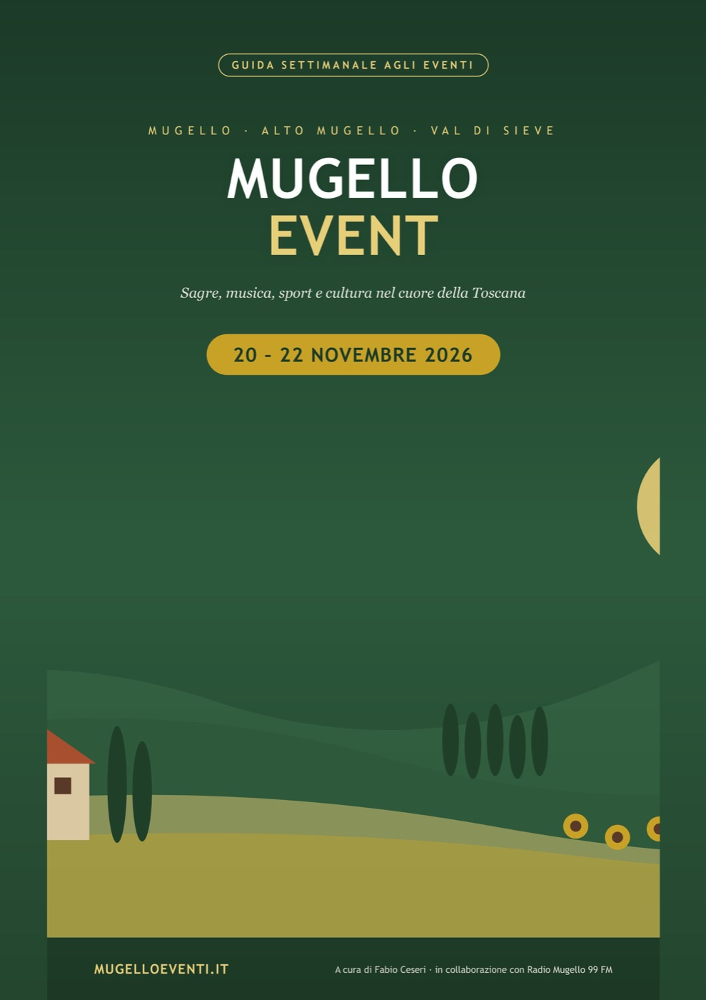
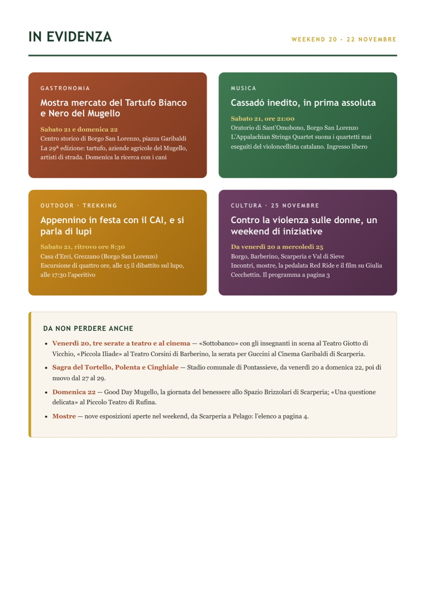
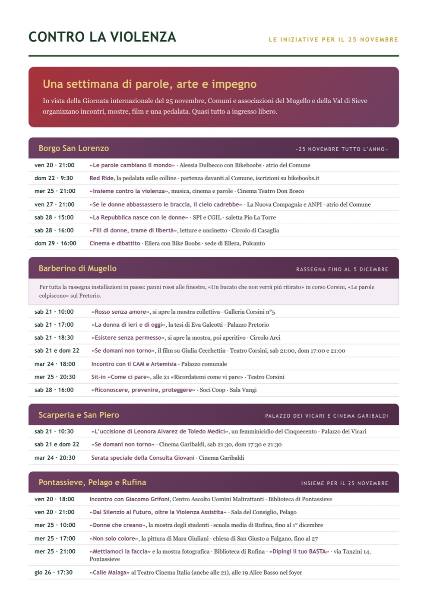
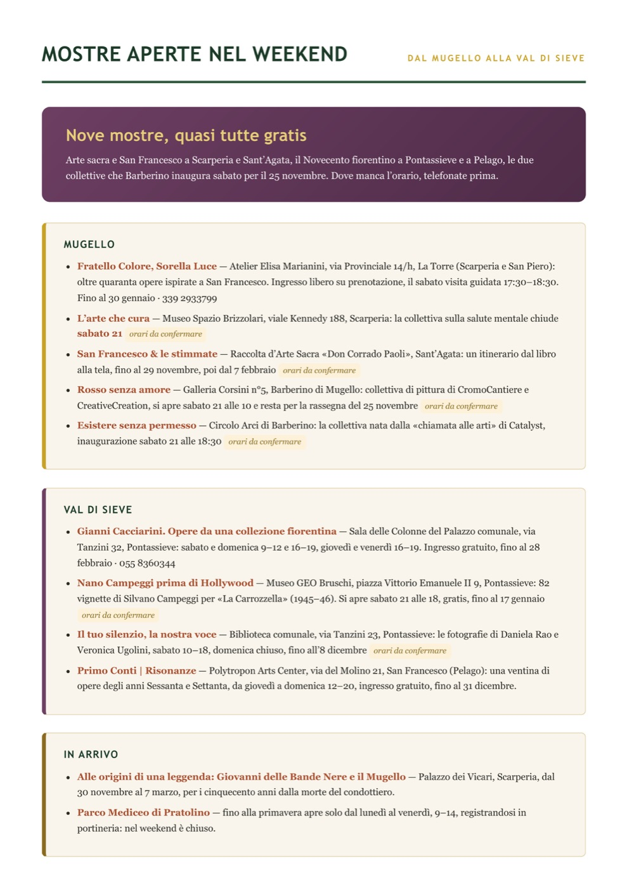
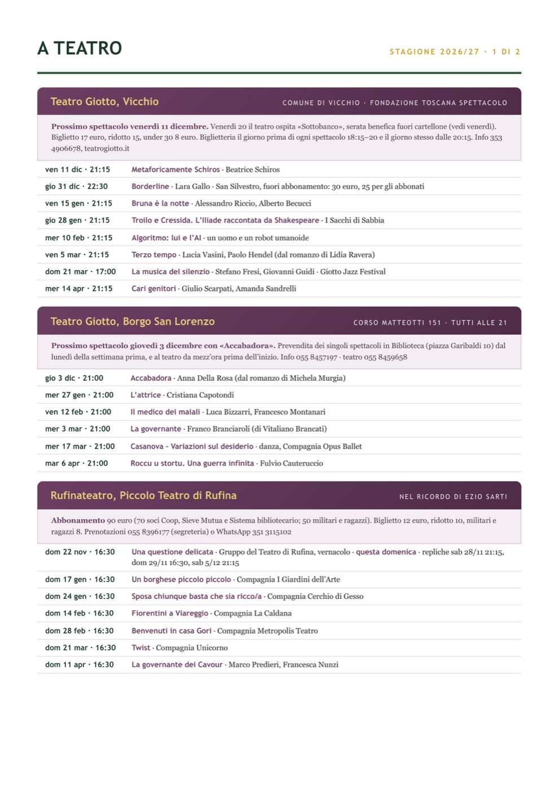
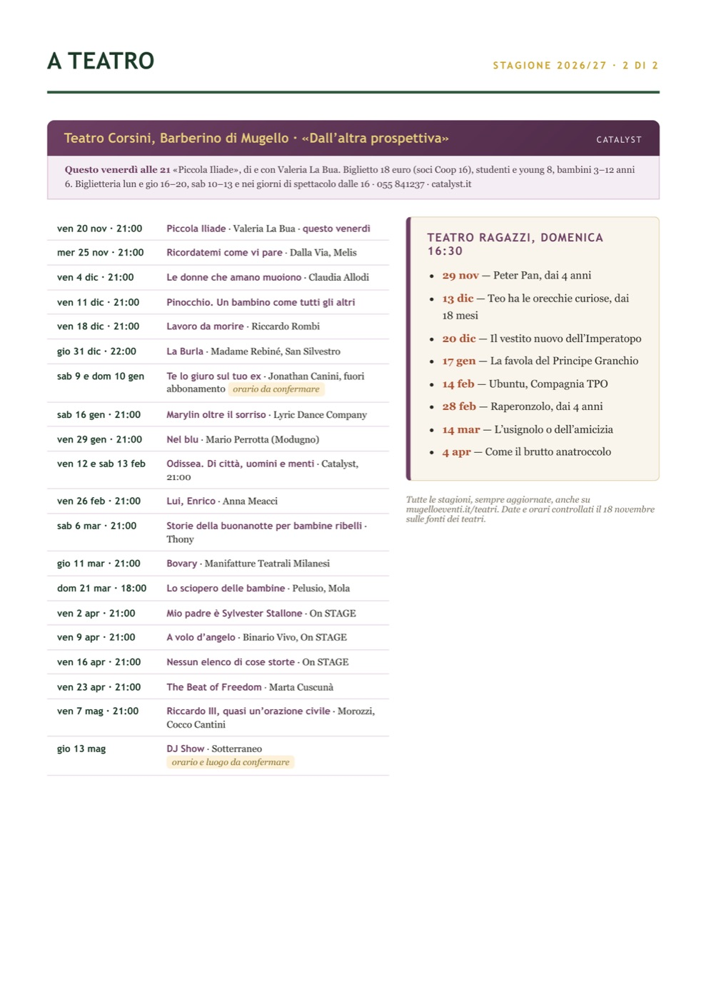
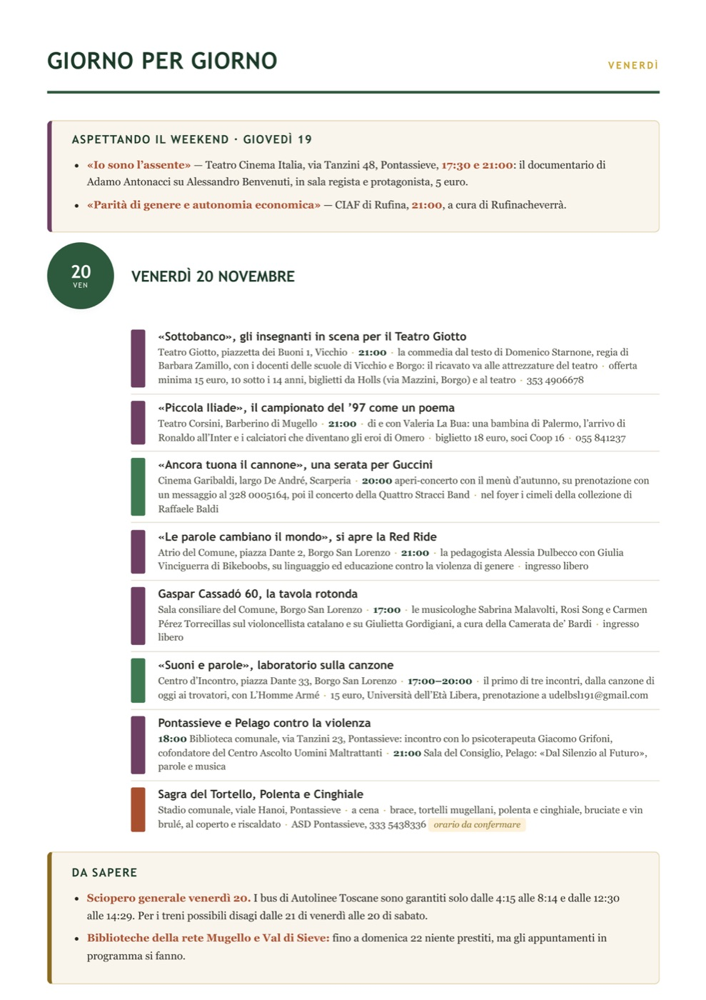
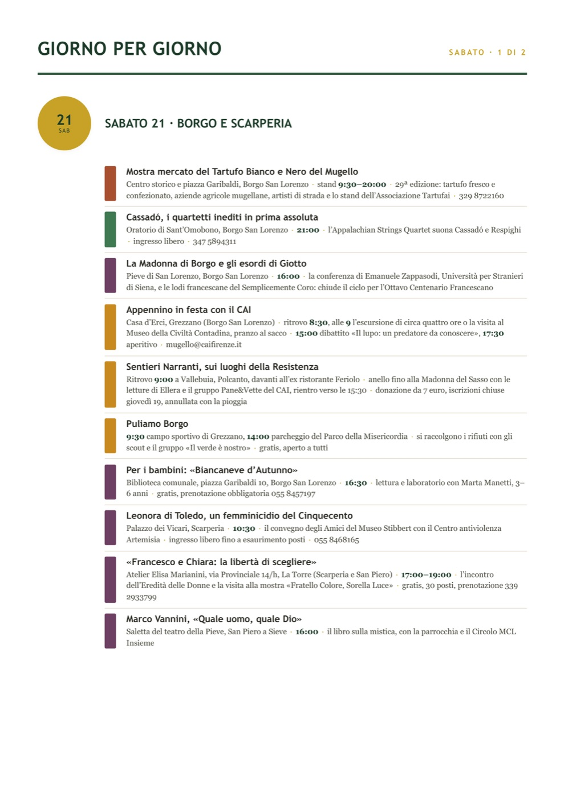
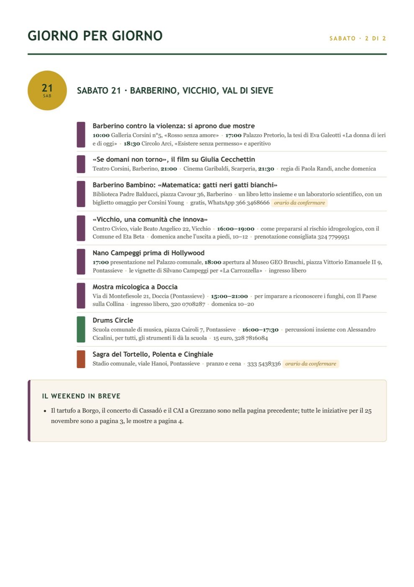
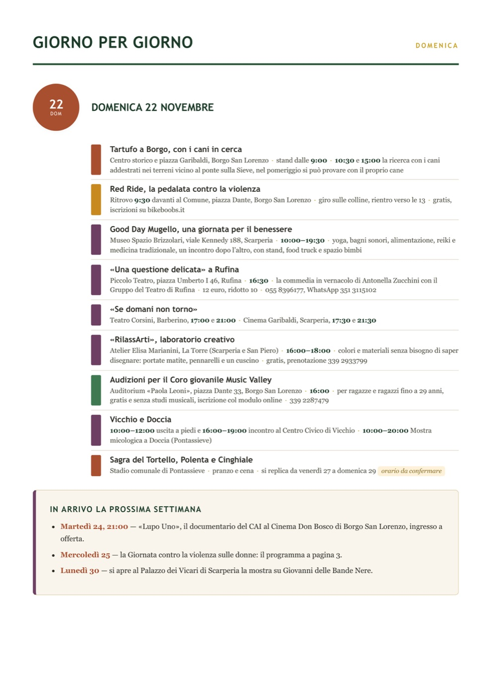

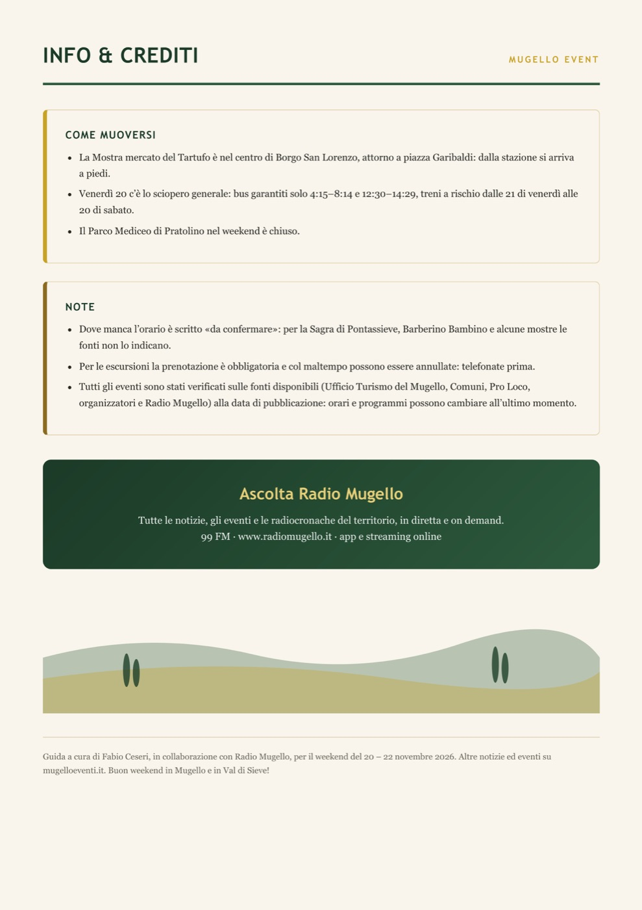
Dove si trova
Giovedì 19 novembre
- «Io sono l'assente»Teatro Cinema Italia, PontassieveApri in Google Maps
Venerdì 20 novembre
- «Sottobanco»Teatro Giotto, VicchioApri in Google Maps
- «Piccola Iliade»Teatro Corsini, Barberino di MugelloApri in Google Maps
- «Ancora tuona il cannone», serata per GucciniCinema Garibaldi, ScarperiaApri in Google Maps
- «Le parole cambiano il mondo»Atrio del Comune, Borgo San LorenzoApri in Google Maps
- Gaspar Cassadó 60, tavola rotondaSala consiliare, Borgo San LorenzoApri in Google Maps
- «Suoni e parole»Centro d'Incontro, Borgo San LorenzoApri in Google Maps
- Incontro con Giacomo GrifoniBiblioteca comunale, PontassieveApri in Google Maps
- «Dal Silenzio al Futuro»Sala del Consiglio, PelagoApri in Google Maps
- Sagra del Tortello, Polenta e Cinghiale (ven, sab e dom)Stadio comunale, PontassieveApri in Google Maps
Sabato 21 novembre
- Mostra mercato del Tartufo (sab e dom)Centro storico, Borgo San LorenzoApri in Google Maps
- Cassadó, i quartetti ineditiOratorio di Sant'Omobono, Borgo San LorenzoApri in Google Maps
- La Madonna di Borgo e gli esordi di GiottoPieve di San Lorenzo, Borgo San LorenzoApri in Google Maps
- Appennino in festa con il CAICasa d'Erci, GrezzanoApri in Google Maps
- Sentieri NarrantiVallebuia, PolcantoApri in Google Maps
- Puliamo BorgoCampo sportivo di GrezzanoApri in Google Maps
- «Biancaneve d'Autunno»Biblioteca comunale, Borgo San LorenzoApri in Google Maps
- Convegno su Leonora di ToledoPalazzo dei Vicari, ScarperiaApri in Google Maps
- «Francesco e Chiara» e «RilassArti» (sab e dom)Atelier Elisa Marianini, La TorreApri in Google Maps
- Marco Vannini, «Quale uomo, quale Dio»Pieve di San Piero a SieveApri in Google Maps
- Barberino: «Rosso senza amore»Galleria Corsini n°5, BarberinoApri in Google Maps
- Barberino: tesi di Eva GaleottiPalazzo Pretorio, BarberinoApri in Google Maps
- Barberino: «Esistere senza permesso»Circolo Arci, BarberinoApri in Google Maps
- «Se domani non torno» (sab e dom)Teatro Corsini, Barberino e Cinema Garibaldi, ScarperiaApri in Google Maps
- Barberino BambinoBiblioteca Padre Balducci, BarberinoApri in Google Maps
- «Vicchio, una comunità che innova» (sab e dom)Centro Civico, VicchioApri in Google Maps
- Nano Campeggi prima di HollywoodMuseo GEO Bruschi, PontassieveApri in Google Maps
- Mostra micologica (sab e dom)Doccia, PontassieveApri in Google Maps
- Drums CircleScuola comunale di musica, PontassieveApri in Google Maps
Domenica 22 novembre
- Red Ride, la pedalataPiazza Dante, Borgo San LorenzoApri in Google Maps
- Good Day MugelloMuseo Spazio Brizzolari, ScarperiaApri in Google Maps
- «Una questione delicata»Piccolo Teatro di RufinaApri in Google Maps
- Audizioni Coro giovanile Music ValleyAuditorium Paola Leoni, Borgo San LorenzoApri in Google Maps
Mostre del weekend
- Fratello Colore, Sorella LuceAtelier Elisa Marianini, La TorreApri in Google Maps
- L'arte che curaMuseo Spazio Brizzolari, ScarperiaApri in Google Maps
- San Francesco & le stimmateRaccolta d'Arte Sacra, Sant'AgataApri in Google Maps
- Gianni CacciariniSala delle Colonne, PontassieveApri in Google Maps
- Il tuo silenzio, la nostra voceBiblioteca comunale, PontassieveApri in Google Maps
- Primo Conti | RisonanzePolytropon Arts Center, San Francesco (Pelago)Apri in Google Maps
Per chi viene in Mugello
Ultime notizie
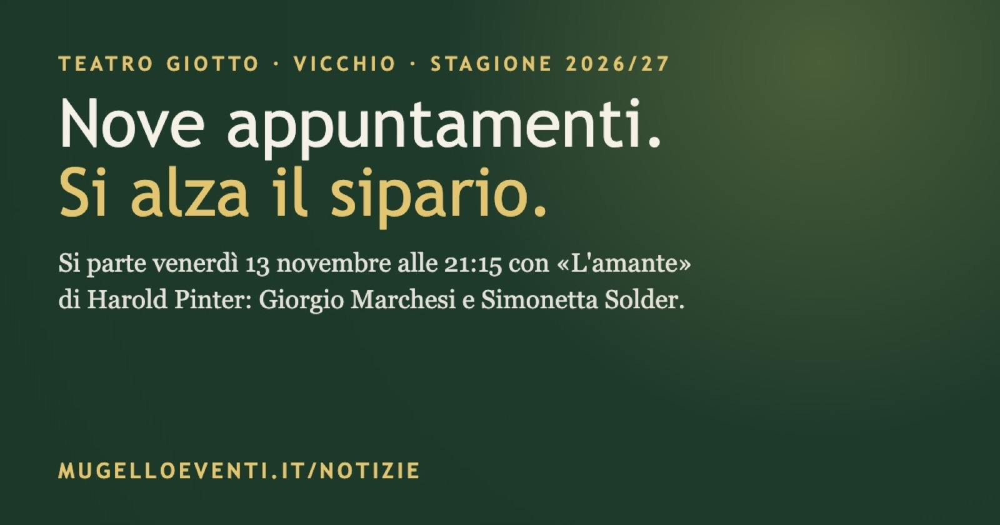
Teatro Giotto di Vicchio, la stagione parte venerdì 13 novembre con «L'amante» di PinterNove appuntamenti fino ad aprile, con Amanda Sandrelli, Giulio Scarpati, Paolo Hendel e Stefano Fresi. Apre la coppia Giorgio Marchesi e Simonetta Solder.
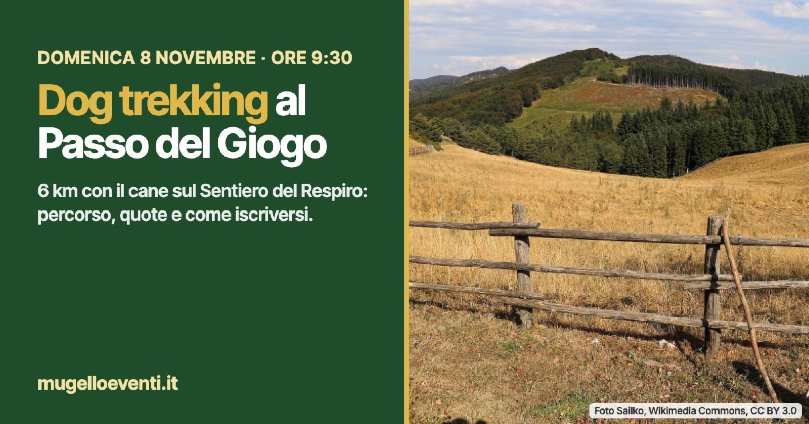
Dog trekking al Passo del Giogo domenica 8 novembre: percorso, quote e iscrizioniUn anello di 6 km con i cani sul Sentiero del Respiro, tra faggete, crinale CAI 300 e Monte Altuzzo. Ritrovo alle 9:30, iscrizione obbligatoria.
Tutte le notizie →